2023Jan – May
On-the-Job Trainee
BWARE Business Solution Enterprise Inc., San Fernando, Pampanga. Applied classroom knowledge to real tasks in a professional IT environment.
I build modern, functional, and scalable WordPress websites with custom themes, ACF Pro, and Elementor. Turning ideas into responsive digital experiences.
From custom themes to fixing a stubborn PHP error, here is how I can help your WordPress site.
Tailored themes with reusable templates and responsive layouts, built around your design and content.
Integrating and configuring WordPress plugins to extend what your site can do.
Polished, responsive sites built with Elementor and Elementor Pro, easy for you to edit visually.
Flexible content with Advanced Custom Fields, so editors can manage page sections and repeaters themselves.
Custom post types, taxonomies and PHP functionality behind dynamic WordPress features.
Finding and fixing WordPress, front-end and PHP issues to keep sites stable and performing well.
I’m Joshua Andrew Marquez, a WordPress Developer based in the Philippines with 3+ years of professional experience.
I specialize in developing custom WordPress themes, building flexible content management experiences with Advanced Custom Fields (ACF) Pro, and creating websites with Elementor and Elementor Pro. I enjoy turning designs into responsive, accessible, and easy-to-manage websites.
My approach combines clean front-end implementation with practical WordPress development, so every website is built to work well for both visitors and the people managing its content.
WordPress websites I’ve built and customized for clients, from corporate sites to product catalogs and property search.
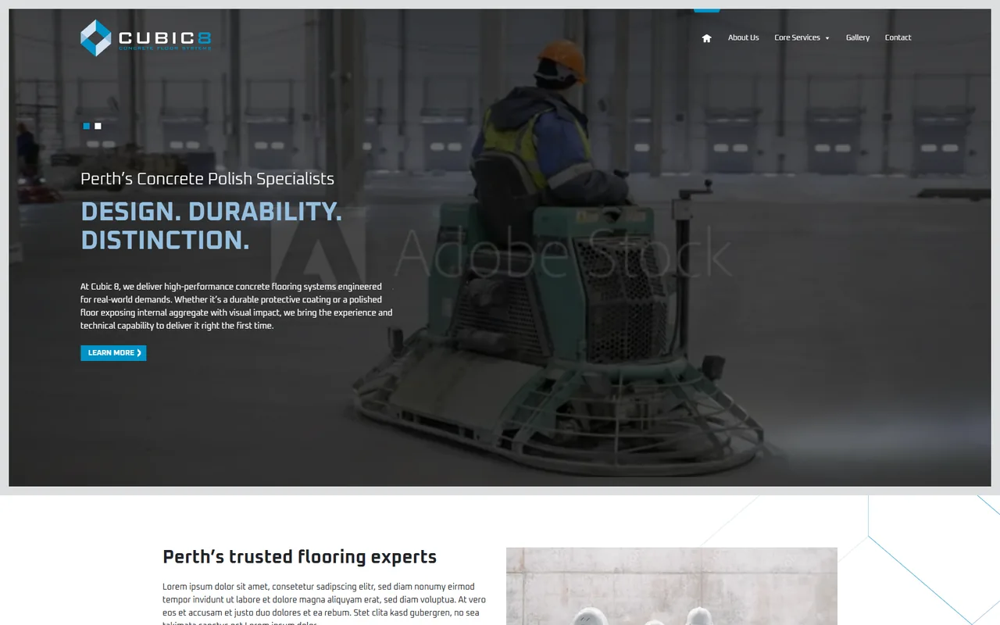
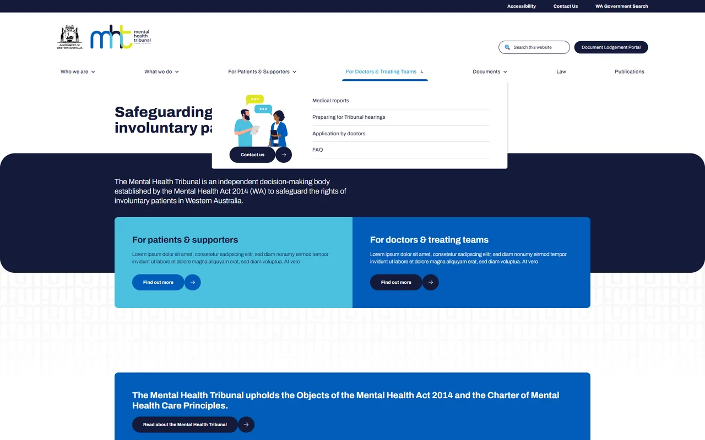
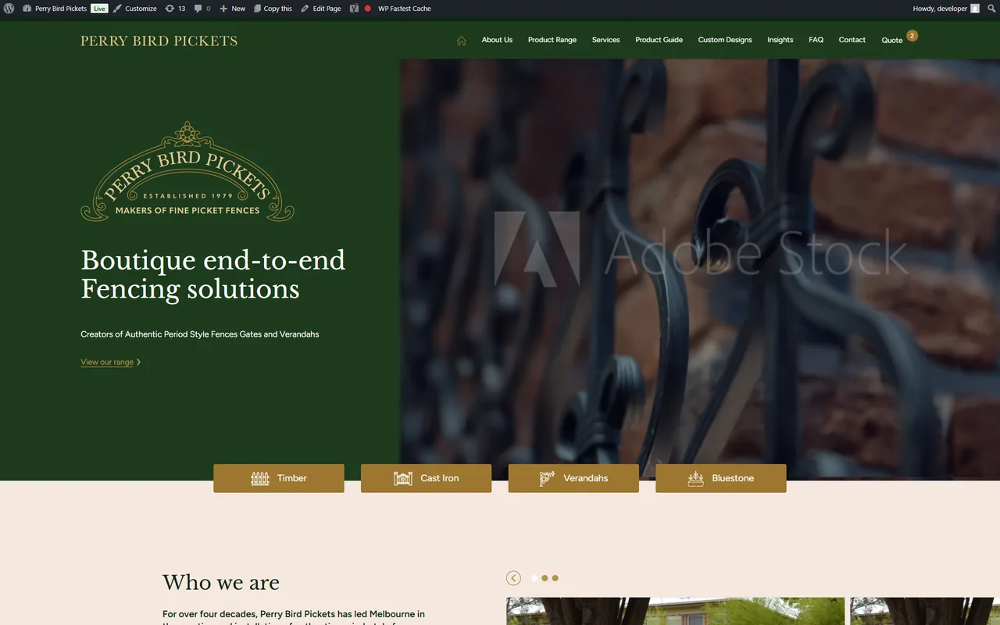
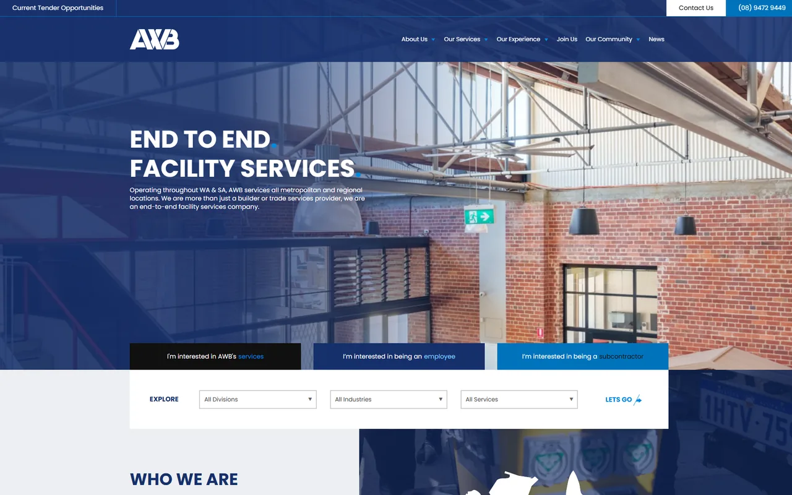
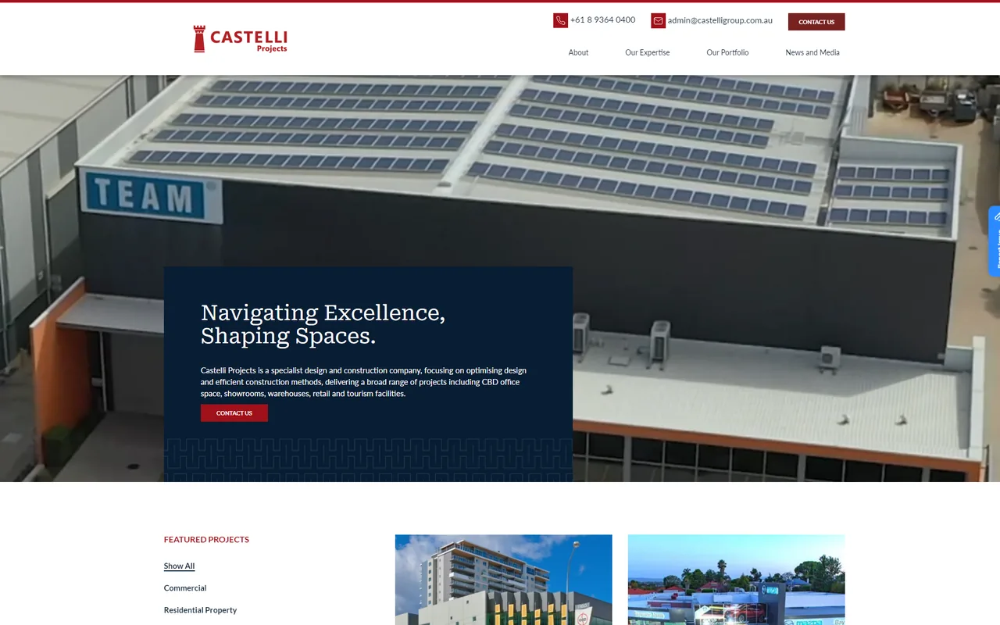
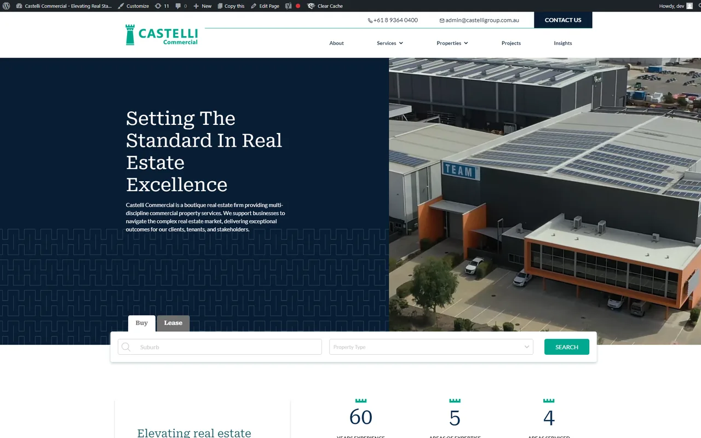
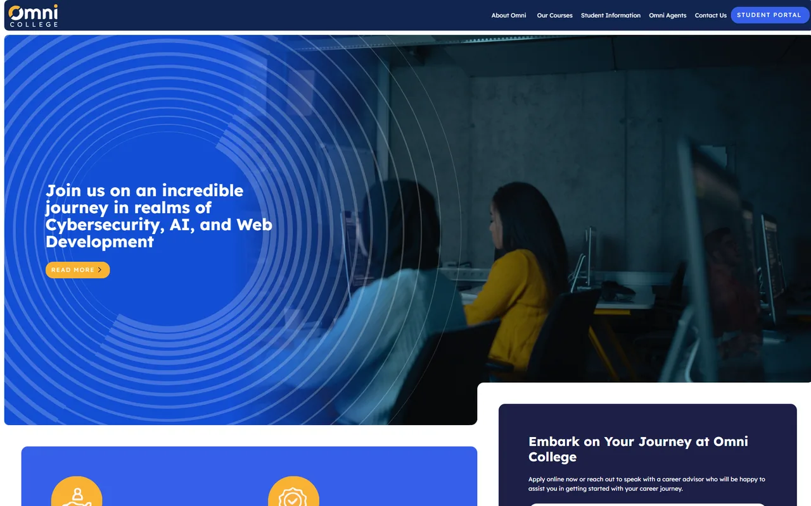
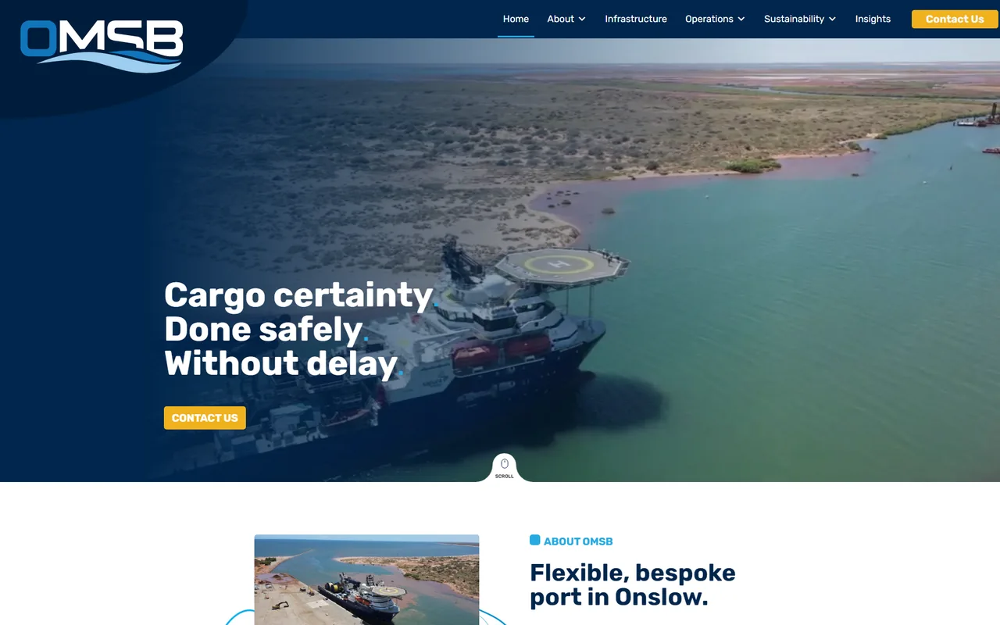
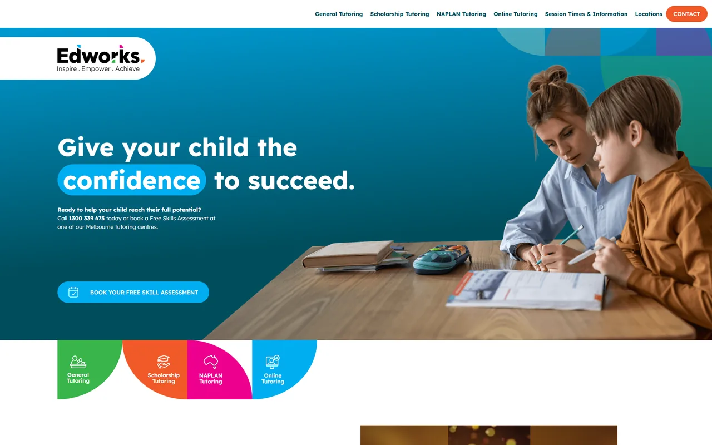
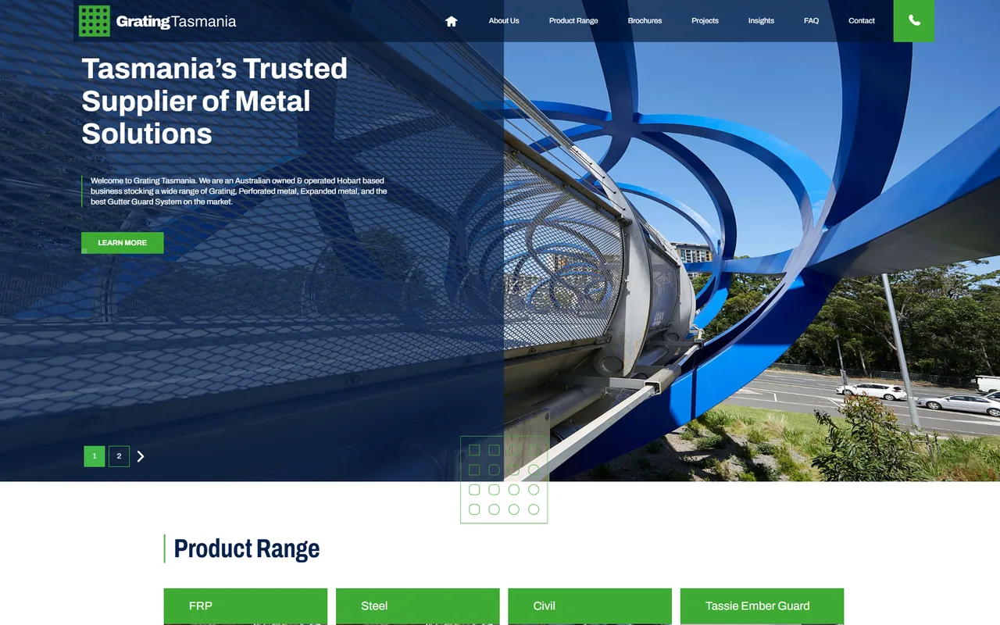
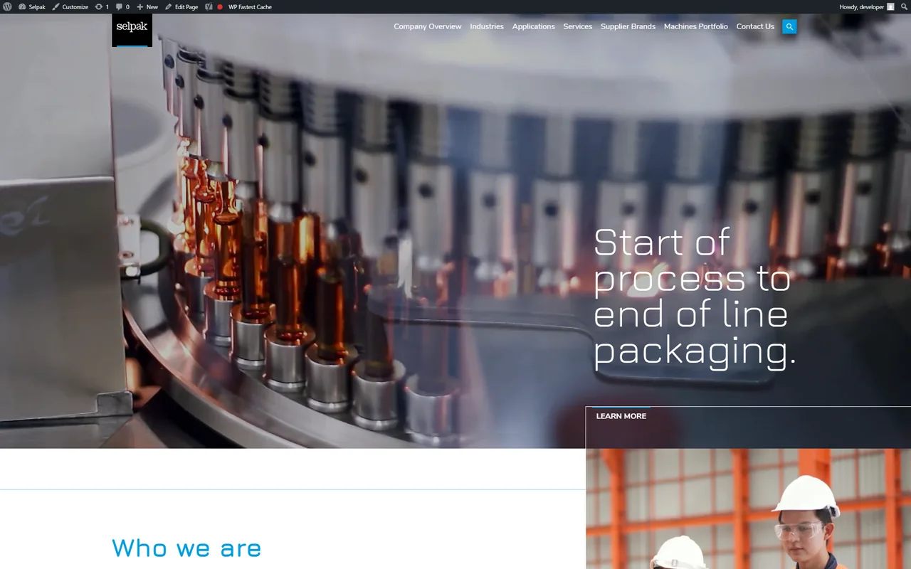
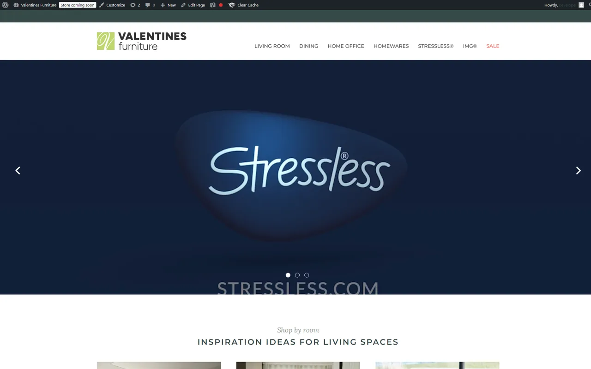
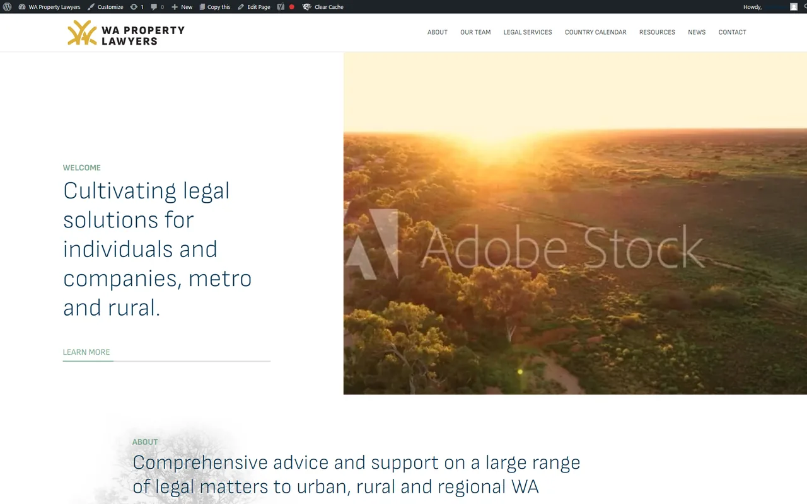
Professional experience building and supporting WordPress websites.
BWARE Business Solution Enterprise Inc., San Fernando, Pampanga. Applied classroom knowledge to real tasks in a professional IT environment.
Virtual Crafters, Angeles City, Pampanga. Built and customized client sites with custom themes, ACF Pro and Elementor, integrated plugins and fixed front-end and PHP issues as part of the team.
Virtual Crafters, Angeles City, Pampanga. Develop and maintain WordPress websites, implement custom themes and page layouts, work with ACF Pro and Elementor, and translate designs into responsive front-end experiences.
I’m open to connecting about WordPress development opportunities and projects.
Send me an email